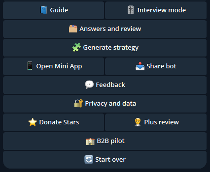

Что проверять
Public repo, English product framing и подробную страницу с Mini App, HTML, Excel и deployment boundary.
Страница продукта
Англоязычный voice-first business navigator: из разговора в structured output, decision support, notes и next step.

Public repo, English product framing и подробную страницу с Mini App, HTML, Excel и deployment boundary.
Продуктовая сборка voice navigator под международный язык и бизнес-решения.
Помогает превращать разговоры в решения, а решения в действия.
Это не бот ради Telegram. Это интерфейс между человеческой мыслью и операционным next step.
Product proof page
An English Telegram voice agent for founder discovery: voice or text input becomes structured business context, reviewable answers, HTML output and an Excel workbook.
Public repo, English product copy, Mini App flow, HTML report, Excel output and deployment boundaries.
Adapted a voice-first business discovery workflow for English-language product validation.
Turns founder conversations into decision support and practical next actions.
The Telegram interface acts as the capture layer between human thinking and operational follow-up.